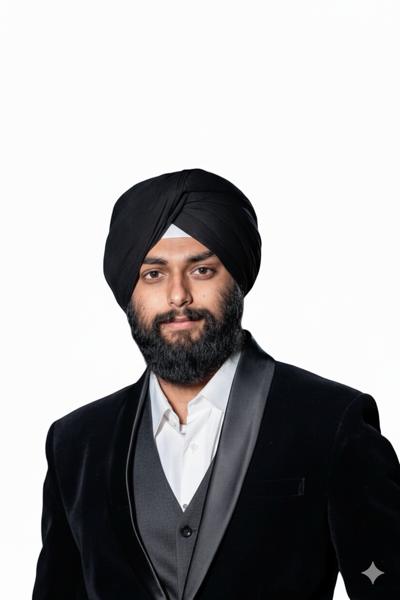

Ambiguity into a roadmap
I turn user problems, technical constraints and competing stakeholder needs into clear features, priorities and delivery plans.
- User research
- Roadmapping
- Requirements
- UX feedback
Product Management · Technology, Strategy and User-Centred Products
I am Gagandeep Singh Pahuja, an NYU Tandon Management of Technology candidate who has worked inside production systems, founded ventures, led student communities and learned product from both sides of the roadmap.

Who I work with
My value is not one job title. It is the combination of technical fluency, business study, operating experience and the ability to bring the right people into the conversation.
I turn user problems, technical constraints and competing stakeholder needs into clear features, priorities and delivery plans.
Three years around cloud and DevOps taught me how systems fail, how teams coordinate and why adoption matters as much as architecture.
As VP of TechSHRM, I build rooms where students can meet senior operators, ask direct questions and leave with a clearer next step.
The through line
I started with scale. At Tata Consultancy Services, I worked on cloud infrastructure across AWS and GCP, learning how large organisations keep critical systems reliable and how much coordination sits behind every release.
Then I learned the cost of building the wrong thing. Founding ventures taught me that a working product is not enough. You need the right user, a clear problem, a model people trust and the discipline to keep learning when the first answer fails.
NYU made the path global. The Management of Technology programme took me from London to New York, with study across technology, strategy, finance, marketing and design. It also put me in rooms with founders, executives and students building very different futures.
Now the work is product. I am focused on AI products, governance and platforms where trust is part of the product, not a policy added after launch.
Cloud, DevOps and machine learning work across TCS and 4MirrorTech.
UG Solutions and Mahamaya Food Corner, both shaped by direct user research.
TechSHRM partnerships, industry panels and a growing LinkedIn community.
Selected work
Each project starts with a person, a friction and a decision. The point is not the artefact alone. It is what changed because the work existed.
NYU capstone · AI governance
How can an organisation understand whether an AI system is ethical, secure and ready for a quantum future, without reading four separate technical reports?
Our team is building an evaluation approach that turns evidence into four plain-language scores: AI Ethics, AI Cybersecurity, Quantum Maturity and Quantum Ethics, each with strengths, weaknesses and recommendations.
Student platform · Product leadership
Campus discovery products often optimise for volume before trust. I am leading a student team designing a verified campus platform where identity, intent and safety shape the experience from the start.
The work has covered market sizing, user assumptions, product architecture and the trade-offs involved in building for a closed student community.
Founder · EdTech
Computer science students needed real project experience, while early startups needed affordable technical help. UG Solutions connected the two sides through assessments, partnerships and a continuing project pipeline.
I researched more than 100 peers, tested the model with local startups and learned how much of entrepreneurship is simply earning trust repeatedly.
Hackathon winner · Machine learning
I led a four-person team to build an end-to-end machine learning pipeline for London property prices, moving from linear regression to gradient boosting. The final LightGBM model was tuned with Optuna and used custom geospatial features for cultural and education proximity, then deployed as an interactive web app on Vercel.
Experience
Engineering rooms, founder rooms and rooms full of people deciding what to build next. The common thread is ownership.
NYU Tandon School of Engineering. I support Professors Tom Mazzone and Shizhu Liu with course coordination, academic events, scheduling, room bookings, communications and programme operations across faculty and students.
TechSHRM at NYU. I lead external partnerships and industry links, including a Junior Board across eight associate tracks from Outreach and Tech to Events and Alumni.
Foxbiz Software. I defined feature requirements and maintained delivery timelines for a modular SME platform covering online stores, invoicing, multilingual settings, device pairing and data backup, coordinating modules such as business registration, theme configuration and account login.
Mahamaya Food Corner. I led a small team through the full product lifecycle, launching a website-based food delivery MVP from wireframe to live platform, using on-the-ground research to address digital literacy and adoption barriers.
Tata Consultancy Services. I developed and managed cloud infrastructure across AWS and GCP, applied CyberArk and DevOps practices, and worked with cross-functional teams on reliability and performance.
4MirrorTech Innovations. I built machine learning applications with TensorFlow and OpenCV across image processing, facial recognition and social-distancing use cases.
UG Solutions. I launched a venture connecting computer science students with industry projects and startup partners.
Xtrude Lab. I developed interactive environments and level designs with Unreal Engine, C# and blueprint scripting.
Education and credentials
The formal record matters, but so does where it happened: London, New York, Paris-linked summer study and an engineering campus in India.
How I work
These are not slogans. They are the lessons that survived contact with production systems, failed ventures and rooms full of students.
A system can be technically correct and still fail the person using it. I ask who it is for, what they are trying to do and what would make them trust it.
Writing and mentoring force clearer thinking. Sharing the work brings better questions, better people and a record of how the thinking changed.
Good products need good rooms: users, engineers, operators and decision-makers hearing one another early enough for it to change the plan.
Voice and community
On LinkedIn and at NYU, I write and host around the same question: how do students and early-career builders get closer to the people making real decisions?
LinkedIn creator and mentor
I share lessons from product, AI, careers and student leadership, and mentor students on project ideas and technical execution. The audience is not the point on its own. The conversations are.
Featured by NYU Tandon
NYU Tandon profiled my route from TCS and two failed ventures to the Management of Technology programme in London and New York. It covers the setbacks honestly, including why they became the reason I came back to study management properly.
TechSHRM VP, Graduate Assistant, Data Society Hackathon winner and an active voice in the Tandon student community.
“Gagandeep is so enthusiastic to learn new things, he is always ready for a challenge.”
Dr Ravikant Soni · Assistant Professor
“I have seen Gagandeep's work, he is highly skilled in Python, SQL, Git and GCP.”
Rahul Jaiswal · Mentor
What is next
I am preparing for product roles starting in 2027 and I am always glad to talk about AI products, technology strategy, student communities and the messy work of turning an idea into something people use.